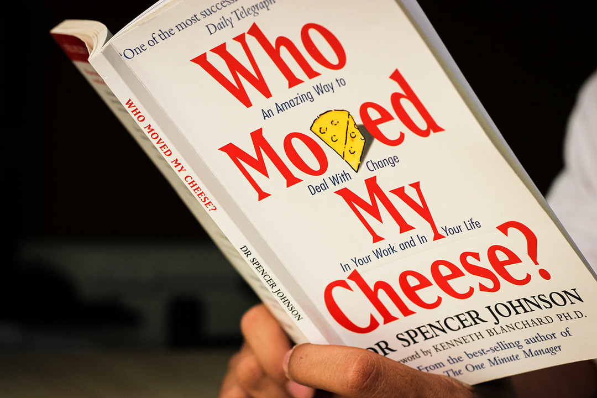
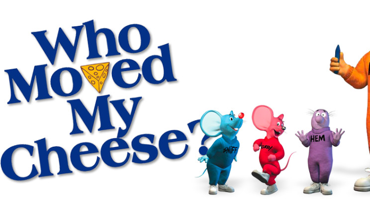

When I gave a list of non-fictions books like this and told one of my closest friends to buy them for me, his reaction was, “why on earth do you read these “motivational type books”. Aren’t they boring?” As he said, these books are motivational a bit. But to me the word MOTIVATION has become cheap now a days. It depends on the individuals. If you want to be motivated, just search. You will get enough of it.
Enough with the lectures, let’s talk about the book. Ok. It’s a non-fiction New York best seller.

The context is explained with a story. The writer, Dr. Spencer Johnson, first told this story to some of his close friends and relatives. As all of them were having a nice lesson, his partner writer from another book asked him to write the book down and the rest is history. The book got sold over 12 Million hard copies worldwide.
The book starts with the plot of few friends having some problem going on in their life gathered for a reunion. One of them tell the story to the rest.
The story is about 4 characters. Two of them are mice named sniff & scurry. They were just mice having a simple thinking process. Rest Two are little people named Hem & Haw. They were more like human or can be said miniature human with a complex human brain. They search for their food, “Cheese”, to and fro in a maze. They found their food once. But later it got moved. The story is about how they behaved when their cheese got moved.

Later, the friends had a discussion. They analyzed the story and discussed how they can use the story in their problem. It seems like everyone either with a family problem, or business problem, or relationship problem, or job problem found some way to apply it.
In this book, the word “Cheese” is used as a metaphor. It symbolizes every comfort zone that we don’t want to get out of, every success with which we are satisfied.
To some people, the story can seem way too much simple. Yes! Indeed. Because the story is actually simple. But the way it was pictured and described, that was meaningful. If i quote some lines from the book like-
All of these quotes are like, who doesn’t know them. But how they exactly matches the situation will make it more significant.
This is a book of 97 page. So if anyone want, s/he can complete it with one sit. But I personally request not to do so. Take some time, go through the book, think over it, try to grab and hold the context. I personally made some decisions after reading the book. It was helpful for me. Why not give it a shot!